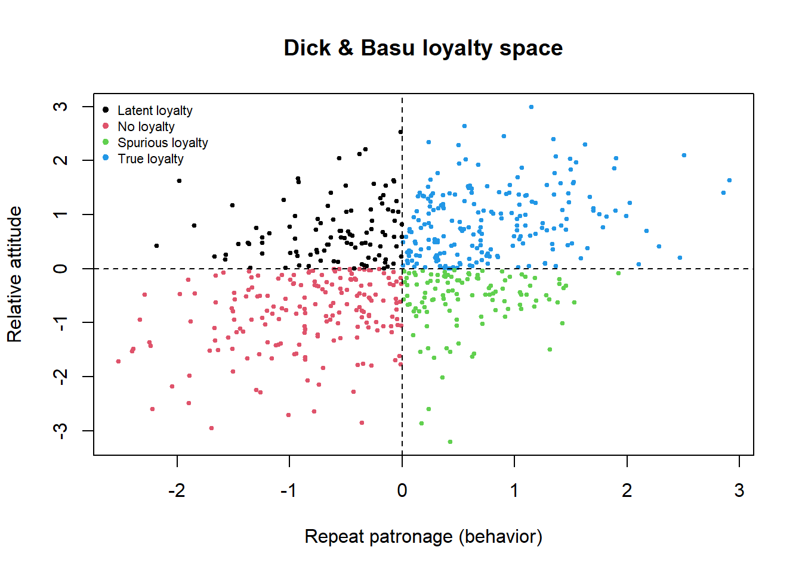

flowchart LR SV["Shared values"] --> T["Trust"] COMM["Communication"] --> T OPP["Opportunistic<br/>behavior"] -->|–| T BEN["Relationship<br/>benefits"] --> C["Commitment"] TC["Termination<br/>costs"] --> C SV --> C T --> C C --> ACQ["Acquiescence"] C --> LEAVE["Propensity<br/>to leave (–)"] T --> COOP["Cooperation"] T --> UNC["Decision<br/>uncertainty (–)"]
5 Trust, Commitment, and Loyalty
If satisfaction (Chapter 4) is the evaluative residue of a single consumption episode, the relational constructs are what accumulate across many. Marketing’s “relational turn” of the late 1980s reframed exchange not as a sequence of independent transactions but as an ongoing relationship with a past and an expected future, and it imported a family of constructs to describe the glue that holds such relationships together: trust, the willingness to rely on a partner one is confident in; commitment, the enduring desire to maintain a valued relationship; and loyalty, the resulting disposition to keep choosing the same partner despite situational pulls to defect. These three are the most theorized intangibles in relationship marketing, and they form a short causal chain—trust and commitment are the psychological mediators, loyalty the behavioral-attitudinal outcome—whose links have been estimated and re-estimated for three decades.
This chapter treats them as a system rather than three isolated scales. We open with the relational turn that made the constructs necessary, then define and formalize each in turn: trust as a two-dimensional belief, commitment as a multi-component bond, and loyalty as a two-by-two of attitude and behavior layered over a four-phase developmental sequence. We then assemble them into the commitment–trust theory of relationship marketing—the field’s canonical mediation model—and show, with reproducible code, how it is identified and estimated as a structural model of latent constructs. The chapter closes with the meta-analytic evidence on what drives and what follows from these constructs, and with the disciplining findings that puncture the naive view that more relationship is always better. Throughout, the measurement apparatus of Chapter 3 is doing silent work: trust, commitment, and loyalty are latent constructs measured by reflective indicators, and every estimate below inherits the reliability and validity problems developed there.
5.1 The Relational Turn
The intellectual pivot is Dwyer, Schurr, and Oh (1987), who argued that marketing had over-invested in the discrete transaction—a clean, anonymous, price-mediated exchange with no past and no future—and under-theorized relational exchange, in which the parties’ history and anticipated future govern present behavior. They mapped a developmental sequence (awareness, exploration, expansion, commitment, dissolution) through which a buyer–seller dyad passes, and in doing so they relocated the object of study from the act of purchase to the relationship that produces a stream of purchases. The move had a measurement consequence that this chapter inherits: once the relationship is the unit of theory, the constructs worth measuring are the ones that characterize relationships—how much the parties trust each other, how committed they are, how loyal the buyer is—rather than the attributes of any single transaction.
The relational turn drew its theoretical spine from social exchange theory: relationships persist when each party’s outcomes exceed both their internal comparison level (what they feel they deserve) and the comparison level of alternatives (what they could get elsewhere). Trust and commitment are, in this reading, the psychological residues of a history of exchanges whose outcomes have repeatedly cleared those bars. The constructs are therefore not free-floating attitudes but relationship-specific states, which is why they are typically measured with reference to a named partner (“this supplier,” “this brand”) rather than in the abstract.
5.2 Trust
Trust is the willingness of a party to rely on an exchange partner in whom it has confidence. The most durable conceptualization, from Moorman, Zaltman, and Deshpandé (1992) and Moorman, Deshpandé, and Zaltman (1993), decomposes it into two beliefs that are routinely distinguished both theoretically and empirically:
- Credibility (reliability): the belief that the partner has the expertise and dependability to perform effectively and as promised—a competence judgment.
- Benevolence: the belief that the partner is genuinely interested in the truster’s welfare and will not act opportunistically when new conditions arise for which no commitment was made—a motive judgment.
The distinction matters because the two beliefs have different antecedents and different failure modes. A supplier can be highly credible (it always delivers) yet low in benevolence (it will exploit any contractual gap), and a partner that is benevolent but unreliable inspires affection without dependence. Moorman, Deshpandé, and Zaltman (1993) define trust operationally as a willingness to rely on a partner—deliberately separating the belief (confidence in the partner) from the behavioral intention (willingness to act on that confidence), because a party may trust and yet decline to rely when the stakes are too high. This separation foreshadows the identification problem in the commitment–trust model: trust is a latent belief, and the behaviors we observe (continued reliance, information sharing) are its consequences, not the construct itself.
5.2.1 Formalizing reliance under uncertainty
Trust does its work precisely when outcomes are uncertain and the partner could defect. A minimal decision-theoretic statement makes the role of the two beliefs explicit. Let a truster choose whether to rely (\(r = 1\)) or not (\(r = 0\)) on a partner who may honor the relationship (probability \(p\)) or exploit it (probability \(1 - p\)). Reliance yields gain \(G\) if honored and loss \(L\) if exploited; non-reliance yields a safe outcome normalized to \(0\). The truster relies when expected value is positive,
\[ p\,G - (1 - p)\,L > 0 \quad\Longleftrightarrow\quad p > \frac{L}{G + L}. \tag{5.1}\]
The two belief dimensions enter through different terms. Credibility governs \(p\), the perceived probability the partner is able to honor the relationship; benevolence governs the truster’s assessment that the partner is willing to forgo the exploitation payoff even when \(1 - p\) situations arise. Equation Equation 5.1 also exposes why trust substitutes for contracts: raising perceived \(p\) (through reputation, history, or relational norms) lowers the threshold performance a formal safeguard would otherwise have to guarantee, which is the economic content of the claim that trust reduces transaction costs. It also shows trust is stake-dependent: as the loss \(L\) from betrayal grows relative to the gain \(G\), the required confidence rises, so the same belief supports reliance on small matters but not large ones—exactly the belief-versus-behavior gap Moorman, Deshpandé, and Zaltman (1993) insist on.
5.3 Commitment
Commitment is an enduring desire to maintain a valued relationship—a pledge of relational continuity that, unlike a single satisfied transaction, persists across episodes and resists short-term temptation. Gundlach, Achrol, and Mentzer (1995) give the construct its standard internal structure, distinguishing three components that are now treated as conceptually (if not always empirically) separable:
- Affective (attitudinal) commitment: an emotional attachment and identification with the partner—staying because one wants to.
- Calculative (instrumental) commitment: a cost-based bond reflecting switching costs and the scarcity of alternatives—staying because leaving is expensive.
- Temporal/behavioral commitment: consistency of the bond over time, evidenced by durable inputs and pledges rather than momentary intentions.
Gundlach, Achrol, and Mentzer (1995) emphasize that genuine commitment requires inputs—credible, often irreversible investments that signal intent and would be costly to abandon—so commitment is revealed by what a party stakes, not merely by what it says. This is the logic of Anderson and Weitz (1992) on pledges: idiosyncratic investments and other self-binding actions build and sustain commitment in distribution channels precisely because they are hard to reverse, making the pledging party’s continuation credible to the other side. The asymmetry between the two motives is consequential downstream: affective commitment predicts advocacy and willingness to sacrifice, whereas purely calculative commitment can coexist with resentment and evaporates the moment a cheaper alternative appears—a distinction that reappears in Section 5.5 as the difference between true and spurious loyalty.
5.4 The Commitment–Trust Theory
The synthesis that organizes the field is the commitment–trust theory of Morgan and Hunt (1994), universally abbreviated KMV (for the “key mediating variables” model). Its central claim is a mediation hypothesis: relationship marketing succeeds not because relational inputs act directly on outcomes, but because they operate through commitment and trust, which are the key mediating variables standing between a set of relational antecedents and a set of relational outcomes. Trust additionally is a cause of commitment—one commits to a partner one trusts— so the two mediators are themselves ordered.
Morgan and Hunt (1994) specify five antecedents (relationship termination costs, relationship benefits, shared values, communication, and opportunistic behavior) and five outcomes (acquiescence, propensity to leave, cooperation, functional conflict, and decision-making uncertainty), with commitment and trust mediating between them. Figure 5.1 renders the core mediation skeleton. The model’s enduring influence comes from this architecture rather than from any single coefficient: it established that relational constructs are mediators, which means that a study which regresses an outcome directly on relationship investments—omitting trust and commitment—is mis-specified, and its direct effect is a reduced-form blend of the true structural paths.
5.4.1 Estimating the mediation model
The KMV model is a structural-equation model in the sense of Section 3.3: each construct is latent, measured by reflective indicators, and the structural paths connect the latent variables. The chunk below simulates a compact version—two antecedents (shared values, communication) feeding trust, trust plus relationship benefits feeding commitment, and commitment driving acquiescence—each construct measured by three reflective items, then fits it in lavaan (Rosseel 2012) and recovers the structural paths. The point is the one Morgan and Hunt (1994) make conceptually: the antecedents’ effect on the outcome is indirect, routed through the mediators, and a structural model recovers that routing while a naive regression of the outcome on the antecedents would not.
Code
set.seed(914)
have_lavaan <- requireNamespace("lavaan", quietly = TRUE)
n <- 800
# --- latent constructs (structural model) ---
shared <- rnorm(n) # shared values
comm <- rnorm(n) # communication
trust <- 0.45 * shared + 0.35 * comm + rnorm(n, sd = 0.7)
benef <- rnorm(n) # relationship benefits
commit <- 0.50 * trust + 0.30 * benef + rnorm(n, sd = 0.7)
acquie <- 0.55 * commit + rnorm(n, sd = 0.8) # acquiescence (outcome)
# --- reflective measurement: 3 indicators per construct ---
ind <- function(eta, lambdas) {
sapply(lambdas, function(l) l * eta + rnorm(length(eta), sd = sqrt(1 - l^2)))
}
mk <- function(eta) ind(scale(eta), c(0.85, 0.78, 0.72))
dat <- data.frame(
setNames(as.data.frame(mk(shared)), paste0("sv", 1:3)),
setNames(as.data.frame(mk(comm)), paste0("cm", 1:3)),
setNames(as.data.frame(mk(trust)), paste0("tr", 1:3)),
setNames(as.data.frame(mk(benef)), paste0("bn", 1:3)),
setNames(as.data.frame(mk(commit)), paste0("co", 1:3)),
setNames(as.data.frame(mk(acquie)), paste0("aq", 1:3))
)
if (have_lavaan) {
kmv <- "
SV =~ sv1 + sv2 + sv3
CM =~ cm1 + cm2 + cm3
TR =~ tr1 + tr2 + tr3
BN =~ bn1 + bn2 + bn3
CO =~ co1 + co2 + co3
AQ =~ aq1 + aq2 + aq3
TR ~ SV + CM
CO ~ TR + BN
AQ ~ CO
"
fit <- lavaan::sem(kmv, data = dat, std.lv = TRUE)
pe <- lavaan::parameterEstimates(fit, standardized = TRUE)
print(pe[pe$op == "~", c("lhs", "rhs", "std.all", "pvalue")], row.names = FALSE)
# Indirect effect of shared values on acquiescence (SV -> TR -> CO -> AQ)
b <- function(l, r) pe$std.all[pe$op == "~" & pe$lhs == l & pe$rhs == r]
cat(sprintf("\nIndirect SV -> AQ via TR, CO: %.3f\n",
b("TR","SV") * b("CO","TR") * b("AQ","CO")))
} else {
cat("lavaan unavailable; skipping KMV SEM demo.\n")
}
#> lhs rhs std.all pvalue
#> TR SV 0.534 0
#> TR CM 0.309 0
#> CO TR 0.566 0
#> CO BN 0.272 0
#> AQ CO 0.529 0
#>
#> Indirect SV -> AQ via TR, CO: 0.160The recovered structural coefficients track the population paths, and the indirect-effect calculation makes the mediation explicit: shared values reach acquiescence only by first raising trust, which raises commitment, which raises acquiescence. Omitting the mediators would collapse this chain into a single attenuated direct effect and discard the mechanism the theory is about.
5.5 Loyalty
Loyalty is the downstream construct the relationship is built to produce, and it is the one most often mismeasured—because the behavior (repeat buying) and the attitude (commitment to the brand) can come apart. Dick and Basu (1994) give the field its organizing scheme by crossing relative attitude (how strongly, and how differentiated from alternatives, the consumer evaluates the brand) with repeat patronage (observed behavioral frequency), yielding four cells (Table 5.1):
| High repeat patronage | Low repeat patronage | |
|---|---|---|
| High relative attitude | Loyalty (true) | Latent loyalty |
| Low relative attitude | Spurious loyalty | No loyalty |
The typology’s payoff is diagnostic. Spurious loyalty—repeat buying without favorable attitude—looks identical to true loyalty in transaction data but is fragile, sustained by inertia, switching costs, or lack of alternatives rather than preference, and it collapses when a competitor removes the friction. Latent loyalty—favorable attitude without repeat buying—signals that situational or market barriers (stockouts, distribution gaps, budget constraints) suppress behavior the attitude would otherwise produce. The managerial prescriptions differ sharply across cells, which is the whole point: a firm reading only behavioral loyalty cannot tell a defensible franchise from a captive one, and will mis-allocate retention spending accordingly. This is the construct-to-measure gap of Figure 3.1 in operational dress—behavioral repeat purchase is a deficient and contaminated measure of the loyalty construct.
5.5.1 Loyalty as a developmental sequence
Oliver (1999) deepens the static typology into a temporal one, arguing that loyalty develops through four phases, each vulnerable to a different competitive threat:
- Cognitive loyalty: preference grounded in beliefs about the brand’s attributes (information-based, hence vulnerable to better competitor information).
- Affective loyalty: a liking or attitude toward the brand built from cumulative satisfaction (vulnerable to competitor-induced dissatisfaction and to the affect’s own decay).
- Conative loyalty: a behavioral intention, a commitment to rebuy (vulnerable to counter-persuasion).
- Action loyalty: intention converted into action accompanied by a willingness to overcome obstacles—the only phase that is behaviorally inertial and hard for competitors to disrupt.
The sequence matters because it locates where a loyalty program or recovery effort must intervene: defending a merely cognitively loyal customer requires different levers than defending an action-loyal one, and the deepest loyalty is reached only when satisfaction has been converted, stage by stage, into a self-sustaining behavioral disposition. Oliver’s account also clarifies why satisfaction is necessary but not sufficient for loyalty—satisfaction feeds affective loyalty but must still be carried through the conative and action phases—anticipating the asymmetric, nonlinear satisfaction–loyalty link discussed below.
5.5.2 Visualizing the typology
The chunk below simulates consumers on the two Dick–Basu axes and classifies them into the four cells, illustrating how attitude and behavior dissociate and why a behavior-only measure conflates true with spurious loyalty.
Code
set.seed(2718)
n <- 600
# Attitude and behavior are correlated but far from identical (rho ~ 0.45):
# the gap between them is where spurious and latent loyalty live.
rel_att <- rnorm(n)
repeat_b <- 0.45 * rel_att + rnorm(n, sd = sqrt(1 - 0.45^2))
cell <- ifelse(rel_att > 0 & repeat_b > 0, "True loyalty",
ifelse(rel_att > 0 & repeat_b <= 0, "Latent loyalty",
ifelse(rel_att <= 0 & repeat_b > 0, "Spurious loyalty", "No loyalty")))
cat("Cell counts:\n"); print(table(cell))
#> Cell counts:
#> cell
#> Latent loyalty No loyalty Spurious loyalty True loyalty
#> 102 183 112 203
cat(sprintf("\nShare of repeat buyers (behavior > 0) that are SPURIOUS: %.1f%%\n",
100 * mean(cell[repeat_b > 0] == "Spurious loyalty")))
#>
#> Share of repeat buyers (behavior > 0) that are SPURIOUS: 35.6%
plot(repeat_b, rel_att, col = factor(cell), pch = 19, cex = 0.5,
xlab = "Repeat patronage (behavior)", ylab = "Relative attitude",
main = "Dick & Basu loyalty space")
abline(h = 0, v = 0, lty = 2)
legend("topleft", legend = levels(factor(cell)),
col = 1:4, pch = 19, cex = 0.7, bty = "n")
A sizeable share of the repeat buyers turn out to be spurious loyals—high behavior, low attitude—who would be invisible to a churn model trained on transactions alone. That is the empirical cost of treating a convenient behavioral metric as if it were the construct.
5.6 Relationship Quality: A Higher-Order Construct
Trust, commitment, and satisfaction co-vary so strongly in relational settings that a literature treats them as facets of a single higher-order construct, relationship quality—the overall strength of a relationship, of which the three are reflective sub-dimensions (Hennig-Thurau, Gwinner, and Gremler 2002; Garbarino and Johnson 1999). Garbarino and Johnson (1999) show the facets are not interchangeable across customer types: for low-relational customers, overall satisfaction drives future intentions, whereas for high-relational customers, trust and commitment carry the predictive load. This is a moderation result with a measurement moral—the same battery of items maps onto behavior differently depending on relationship stage, so a model that imposes one structure on a mixed customer base will fit neither segment well.
The second-order structure is itself a testable measurement model. The chunk fits a second-order CFA in which a single relationship-quality factor explains the covariation among first-order trust, commitment, and satisfaction factors, each with its own reflective indicators—the construct-validity machinery of Chapter 3 applied to a relational battery.
Code
set.seed(4040)
n <- 700
# One second-order factor RQ drives three first-order factors,
# each measured by three reflective items.
RQ <- rnorm(n)
trust <- 0.80 * RQ + rnorm(n, sd = 0.6)
commit <- 0.75 * RQ + rnorm(n, sd = 0.6)
satis <- 0.70 * RQ + rnorm(n, sd = 0.6)
mk <- function(eta, lam = c(0.85, 0.80, 0.74))
sapply(lam, function(l) l * scale(eta) + rnorm(length(eta), sd = sqrt(1 - l^2)))
rq_dat <- data.frame(
setNames(as.data.frame(mk(trust)), paste0("tr", 1:3)),
setNames(as.data.frame(mk(commit)), paste0("co", 1:3)),
setNames(as.data.frame(mk(satis)), paste0("sa", 1:3))
)
if (have_lavaan) {
rq_mod <- "
TR =~ tr1 + tr2 + tr3
CO =~ co1 + co2 + co3
SA =~ sa1 + sa2 + sa3
RQ =~ TR + CO + SA # second-order relationship-quality factor
"
fit <- lavaan::cfa(rq_mod, data = rq_dat, std.lv = TRUE)
pe <- lavaan::parameterEstimates(fit, standardized = TRUE)
cat("Second-order loadings (RQ -> facets):\n")
print(pe[pe$op == "=~" & pe$lhs == "RQ", c("rhs", "std.all")], row.names = FALSE)
fm <- lavaan::fitMeasures(fit, c("cfi", "rmsea", "srmr"))
cat(sprintf("\nFit: CFI=%.3f RMSEA=%.3f SRMR=%.3f\n", fm[1], fm[2], fm[3]))
} else {
cat("lavaan unavailable; skipping relationship-quality CFA.\n")
}
#> Second-order loadings (RQ -> facets):
#> rhs std.all
#> TR 0.794
#> CO 0.786
#> SA 0.765
#>
#> Fit: CFI=0.999 RMSEA=0.013 SRMR=0.018When the second-order loadings are high and the model fits, relationship quality is defensible as a single construct; when a facet loads weakly, the data are saying that facet carries relationship-specific information the umbrella construct discards—the same reflective/formative judgment call of Table 3.1, now at the level of whether three constructs are one.
5.7 Consequences and Antecedents: The Meta-Analytic Evidence
Because the relational constructs have been measured in hundreds of studies, the most authoritative statements about them are meta-analytic. Palmatier et al. (2006) synthesize the relationship-marketing literature and deliver several findings that discipline the individual-study noise:
- Commitment and trust are the central mediators, but they do not mediate equally: relational antecedents that build trust and commitment translate into performance, and objective relationship outcomes (e.g., exchange performance) are predicted better by some constructs than the seller’s financial performance is.
- Relationship investments and relationship benefits are among the strongest antecedents, consistent with the social-exchange logic of Section 5.1.
- The constructs’ effects are stronger in service than in product contexts and in channel/B2B than in consumer settings, because relational governance matters most where exchange is ongoing, customized, and hard to contract on completely.
Palmatier, Dant, and Grewal (2007) push further by pitting theoretical perspectives against one another longitudinally, and Palmatier et al. (2013) add a dynamic construct—relationship velocity, the rate and direction of change in relationship quality—showing that the trajectory of a relationship predicts performance beyond its current level, so two relationships of equal present quality diverge in value depending on whether they are improving or decaying. On the outcome side, Verhoef, Franses, and Hoekstra (2002) link relational constructs to customer referrals and cross-buying, and Watson et al. (2015) review how loyalty is built, measured, and—crucially—monetized, integrating the attitudinal/behavioral distinction with the customer-lifetime-value machinery of Chapter 15. Chaudhuri and Holbrook (2001) close the loop to brand outcomes: brand trust and brand affect drive both purchase and attitudinal loyalty, and through them market-share and relative-price outcomes, tying the relational constructs of this chapter to the brand constructs of Chapter 11.
5.8 Disciplining Findings
As with satisfaction (Chapter 4), the relational constructs invite a naive maximization that the evidence does not support. Three findings discipline it.
First, loyalty is not automatically profitable. The presumption that loyal customers cost less to serve, pay more, and spread favorable word of mouth holds only conditionally; Watson et al. (2015) and the broader loyalty literature document that behavioral loyalty unaccompanied by attitudinal loyalty (the spurious cell of Table 5.1) often reflects captivity rather than preference and carries little of loyalty’s promised margin. Managing the behavioral metric without the attitude can buy retention that does not pay.
Second, the satisfaction–loyalty link is asymmetric and nonlinear. Oliver’s phase model (Section 5.5.1) and the delight research of Oliver, Rust, and Varki (1997) imply that satisfaction must be carried through successive phases to yield action loyalty, and that merely meeting expectations secures far less loyalty than exceeding them into delight—while dissatisfaction destroys loyalty faster than satisfaction builds it, echoing the loss-aversion asymmetry priced by markets in Chapter 4.
Third, relationships have a dark side. The same idiosyncratic investments and pledges that build commitment (Anderson and Weitz 1992; Gundlach, Achrol, and Mentzer 1995) also create lock-in, complacency, and vulnerability to opportunism; Aaker, Fournier, and Brasel (2004) show that strong consumer–brand relationships make transgressions more damaging, not less, because a trusted partner’s betrayal violates a stronger expectation. Commitment, in other words, raises the stakes of Equation 5.1: the deeper the relationship, the larger the loss \(L\) a betrayal inflicts, and the more a single failure can cost. Relationship strength is an asset that is also a hostage.
5.9 Connections
The relational constructs sit at the center of the book’s construct map. Their measurement is the reflective-construct theory of Chapter 3; their upstream driver is the satisfaction of Chapter 4; their monetization is the customer-lifetime-value and loyalty-program material of Chapter 15; and their brand-level expression—brand trust, brand attachment, brand love—is developed among the brand-and-self constructs and in Chapter 11. The KMV mediation logic also recurs whenever a marketing input is theorized to work through a psychological state rather than on behavior directly, which is most of the time.
5.10 Key Takeaways
- The relational turn (Dwyer, Schurr, and Oh 1987) relocated marketing’s object of study from the discrete transaction to the ongoing relationship, making trust, commitment, and loyalty the central intangibles—latent constructs measured reflectively, inheriting every reliability and validity concern of Chapter 3.
- Trust is a two-dimensional belief—credibility (competence) and benevolence (motive)—and a willingness to rely distinct from the belief itself (Moorman, Zaltman, and Deshpandé 1992; Moorman, Deshpandé, and Zaltman 1993); it supports reliance only when confidence clears a stake-dependent threshold (Equation 5.1).
- Commitment is multi-component—affective, calculative, temporal (Gundlach, Achrol, and Mentzer 1995)—and is revealed by credible, costly pledges rather than stated intent (Anderson and Weitz 1992); affective and calculative commitment have sharply different downstream behavior.
- The commitment–trust (KMV) theory (Morgan and Hunt 1994) establishes trust and commitment as the key mediating variables between relational antecedents and outcomes; the model is a latent-variable SEM (Section 5.4.1), and omitting the mediators mis-specifies the mechanism.
- Loyalty is the conjunction of favorable relative attitude and repeat patronage (Dick and Basu 1994), developing through cognitive → affective → conative → action phases (Oliver 1999); behavior-only measures cannot separate true from spurious loyalty (Table 5.1).
- Meta-analytic evidence makes commitment and trust the central mediators, strongest in service and B2B settings (Palmatier et al. 2006), with relationship velocity adding a dynamic dimension (Palmatier et al. 2013) and loyalty monetized through CLV (Watson et al. 2015; Verhoef, Franses, and Hoekstra 2002; Chaudhuri and Holbrook 2001).
- Disciplining findings: loyalty is profitable only conditionally, the satisfaction–loyalty link is asymmetric and nonlinear (Oliver, Rust, and Varki 1997), and strong relationships amplify the damage of betrayal (Aaker, Fournier, and Brasel 2004)—commitment raises the stakes of trust, not just its rewards.
5.11 Further Reading
The foundational relational-turn statement is Dwyer, Schurr, and Oh (1987); the trust conceptualization is Moorman, Zaltman, and Deshpandé (1992) and Moorman, Deshpandé, and Zaltman (1993), and the commitment structure is Gundlach, Achrol, and Mentzer (1995) with Anderson and Weitz (1992) on pledges. The canonical synthesis is the commitment–trust theory of Morgan and Hunt (1994), extended longitudinally by Palmatier, Dant, and Grewal (2007) and dynamically by Palmatier et al. (2013). On loyalty, read Dick and Basu (1994) for the typology and Oliver (1999) for the phase model, with Watson et al. (2015) for the modern measurement-and-monetization integration. The meta-analytic anchor is Palmatier et al. (2006); the customer-type moderation is Garbarino and Johnson (1999); the relational-benefits and relationship-quality integration is Hennig-Thurau, Gwinner, and Gremler (2002); and the consumer–brand-relationship and dark-side strands run through Fournier (1998) and Aaker, Fournier, and Brasel (2004) into Chapter 11.
Aaker, Jennifer, Susan Fournier, and S. Adam Brasel. 2004. “When Good Brands Do Bad.” Journal of Consumer Research 31 (1): 1–16. https://doi.org/10.1086/383419.
Anderson, Erin, and Barton Weitz. 1992. “The Use of Pledges to Build and Sustain Commitment in Distribution Channels.” Journal of Marketing Research 29 (1): 18–34. https://doi.org/10.1177/002224379202900103.
Chaudhuri, Arjun, and Morris B. Holbrook. 2001. “The Chain of Effects from Brand Trust and Brand Affect to Brand Performance: The Role of Brand Loyalty.” Journal of Marketing 65 (2): 81–93. https://doi.org/10.1509/jmkg.65.2.81.18255.
Dick, Alan S., and Kunal Basu. 1994. “Customer Loyalty: Toward an Integrated Conceptual Framework.” Journal of the Academy of Marketing Science 22 (2): 99–113. https://doi.org/10.1177/0092070394222001.
Dwyer, F. Robert, Paul H. Schurr, and Sejo Oh. 1987. “Developing Buyer-Seller Relationships.” Journal of Marketing 51 (2): 11–27. https://doi.org/10.1177/002224298705100202.
Fournier, Susan. 1998. “Consumers and Their Brands: Developing Relationship Theory in Consumer Research.” Journal of Consumer Research 24 (4): 343–53. https://doi.org/10.1086/209515.
Garbarino, Ellen, and Mark S. Johnson. 1999. “The Different Roles of Satisfaction, Trust, and Commitment in Customer Relationships.” Journal of Marketing 63 (2): 70–87. https://doi.org/10.1177/002224299906300205.
Gundlach, Gregory T., Ravi S. Achrol, and John T. Mentzer. 1995. “The Structure of Commitment in Exchange.” Journal of Marketing 59 (1): 78–92. https://doi.org/10.1177/002224299505900107.
Hennig-Thurau, Thorsten, Kevin P. Gwinner, and Dwayne D. Gremler. 2002. “Understanding Relationship Marketing Outcomes: An Integration of Relational Benefits and Relationship Quality.” Journal of Service Research 4 (3): 230–47. https://doi.org/10.1177/1094670502004003006.
Moorman, Christine, Rohit Deshpandé, and Gerald Zaltman. 1993. “Factors Affecting Trust in Market Research Relationships.” Journal of Marketing 57 (1): 81–101. https://doi.org/10.1177/002224299305700106.
Moorman, Christine, Gerald Zaltman, and Rohit Deshpandé. 1992. “Relationships Between Providers and Users of Market Research: The Dynamics of Trust Within and Between Organizations.” Journal of Marketing Research 29 (3): 314–28. https://doi.org/10.1177/002224379202900303.
Morgan, Robert M., and Shelby D. Hunt. 1994. “The Commitment-Trust Theory of Relationship Marketing.” Journal of Marketing 58 (3): 20–38. https://doi.org/10.1177/002224299405800302.
Oliver, Richard L. 1999. “Whence Consumer Loyalty?” Journal of Marketing 63 (4_suppl1): 33–44. https://doi.org/10.1177/00222429990634s105.
Oliver, Richard L., Roland T. Rust, and Sajeev Varki. 1997. “Customer Delight: Foundations, Findings, and Managerial Insight.” Journal of Retailing 73 (3): 311–36. https://doi.org/10.1016/S0022-4359(97)90021-X.
Palmatier, Robert W., Rajiv P. Dant, and Dhruv Grewal. 2007. “A Comparative Longitudinal Analysis of Theoretical Perspectives of Interorganizational Relationship Performance.” Journal of Marketing 71 (4): 172–94. https://doi.org/10.1509/jmkg.71.4.172.
Palmatier, Robert W., Rajiv P. Dant, Dhruv Grewal, and Kenneth R. Evans. 2006. “Factors Influencing the Effectiveness of Relationship Marketing: A Meta-Analysis.” Journal of Marketing 70 (4): 136–53. https://doi.org/10.1509/jmkg.70.4.136.
Palmatier, Robert W., Mark B. Houston, Rajiv P. Dant, and Dhruv Grewal. 2013. “Relationship Velocity: Toward a Theory of Relationship Dynamics.” Journal of Marketing 77 (1): 13–30. https://doi.org/10.1509/jm.11.0219.
Rosseel, Yves. 2012. “Lavaan: An R Package for Structural Equation Modeling.” Journal of Statistical Software 48 (2): 1–36. https://doi.org/10.18637/jss.v048.i02.
Verhoef, Peter C., Philip Hans Franses, and Janny C. Hoekstra. 2002. “The Effect of Relational Constructs on Customer Referrals and Number of Services Purchased from a Multiservice Provider: Does Age of Relationship Matter?” Journal of the Academy of Marketing Science 30 (3): 202–16. https://doi.org/10.1177/0092070302303002.
Watson, George F., Joshua T. Beck, Conor M. Henderson, and Robert W. Palmatier. 2015. “Building, Measuring, and Profiting from Customer Loyalty.” Journal of the Academy of Marketing Science 43 (6): 790–825. https://doi.org/10.1007/s11747-015-0439-4.